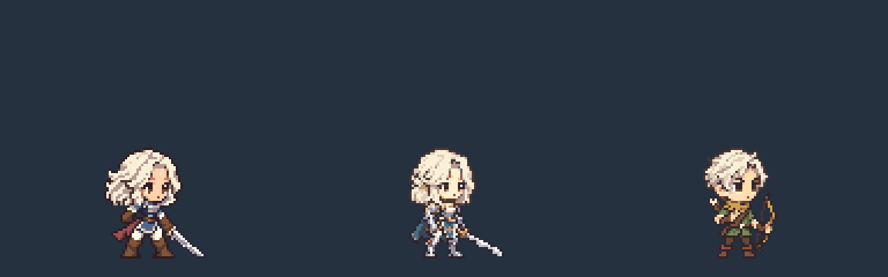
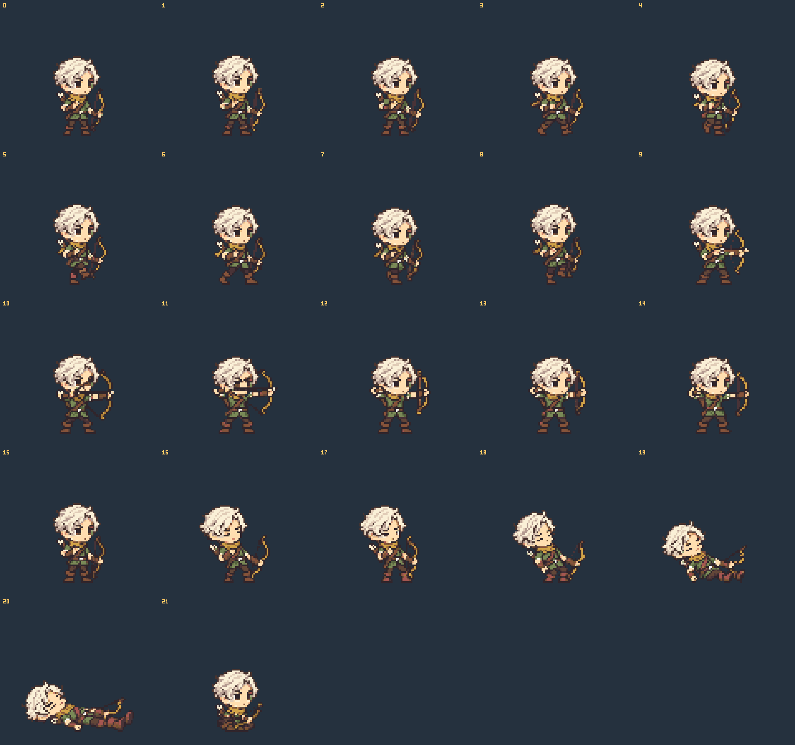

궁수 · archer_male_p2
짧은 옆가르마 · 숲색 튜닉 · 가죽 보호구 · 왼손 활
2등신 · 대기 키 48px · 캔버스 128×120 · 발 기준점 (64,112)
매니페스트 · 사전 계획 · 제작 노트 · 검증 결과
동일 배율 비교 · 쿠키 / 기사 / 궁수

원래 1배 크기 · 4배 크기
프레임별 확인
활 올리기 → 당기기 → 완전 당김 → 놓기 → 시위 진동 → 유지 → 회수
공격 600ms · 3번 프레임에서 발사(360ms, 60%) · 비행 화살은 게임이 별도로 표시합니다.
6개 동작 · 검토용 반복 GIF
GIF는 검토를 위해 반복합니다. 매니페스트에서 공격·피격은 한 번 재생하고 쓰러짐·앉기는 마지막 자세를 유지합니다.
전체 22장

0–2 대기 · 3–8 걷기 · 9–15 공격 · 16–17 피격 · 18–20 쓰러짐 · 21 앉기